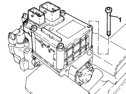
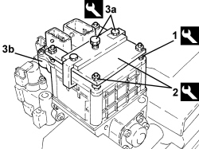
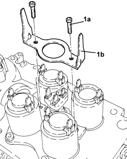
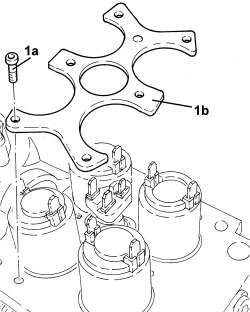
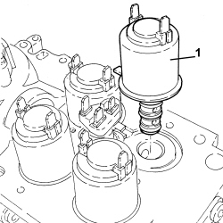
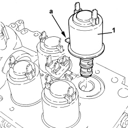
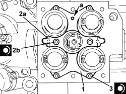
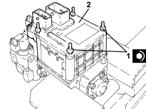

2127C54 GEAR SELECTION SOLENOIDS - R.R.
- Path
- Procedures > 21 GEARBOX UNIT > 2127 ELECTRO-HYDRAULIC SELECTION GEARBOX EXTERNAL CONTROLS > 2127C HYDRAULIC GEAR SELECTION SYSTEM > 2127C54 GEAR SELECTION SOLENOIDS - R.R.
- Kind
- repair procedure (removal / refitting; the operation number is the code)
- Applies to
- engines: 2.2 JTS; all production periods
- Interactive page
- https://sloeber94.github.io/elrnDB-aBrrSpdr/en/#/946004311
Applies to: engines: 2.2 JTS; all production periods
 Removing
Removing
 Refitting
Refitting- Place the gear lever in N.
- Connect an Examiner and run the electrohydraulic system depressurization procedure.
Op. 7055B54 UNDER ENGINE PROTECTION/GUARD - R.R.
Op. 5530B52 BATTERY SUPPORT/DRIP TRAY - R.R
Op. 2127C22 PIPE FROM HYDRAULIC SPEED SELECTION ACTUATOR UNIT TO FLUID RESERVOIR - R.R.
Op. 2127C40 HYDRAULIC SPEED SELECTION HYDRAULIC ACTUATOR UNIT AND CLUTCH - R.R.
- Place the solenoid valve assembly in a vice fitted with protective jaws.
1. Undo the control unit fixing bolts.

Applies to: engines: 2.2 JTS; all production periods
- Fit the tool for removing the control unit as follows:
Tool | Description | Function | Validity |
|---|---|---|---|
2000017800 | Robotized transmission control unit removing-refitting kit | Removing-refitting robotized transmission control unit | 2.2 JTS Selespeed |
1. tighten the studs in the control unit fastening openings
2. fit the reaction plate and secure it to the studs usign the nuts
3. fit the extractor (3a) and tighten the bolt to disconnect the control unit (3b) from the solenoid valve contact plates.

Applies to: engines: 2.2 JTS; all production periods
1. Undo the bolts (1a) and remove the bracket (1b).

Applies to: engines: 2.2 JTS; all production periods
1. Undo the bolts (1a) and remove the pressure sensor and valve retaining plate (1b).

Applies to: engines: 2.2 JTS; all production periods
1. Manually remove the gear selector solenoid valve complete with inner O-ring seals.

Applies to: engines: 2.2 JTS; all production periods
Refitting
Removing- Check that the valve body and the valve itself are perfectly clean.
1. Place the gear selection solenoid valve complete with inner O-ring seals in position.

Applies to: engines: 2.2 JTS; all production periods
1. Place the new pressure sensor and valve retaining plate in position.
2. Place the new bracket (2a) in its housing and secure it by tightening the bolts (2b) to the recommended torque.
Component | Fastening | dia | Value (daNm) | Validity |
|---|---|---|---|---|
Robotized gearbox control unit earth bracket | Bolt | - | 0.3 | 2.2 JTS |
3. Tighten the bolts fixing the pressure sensor and valve retaining plate to the recommended torque in a cross sequence.
Component | Fastening | dia | Value (daNm) | Validity |
|---|---|---|---|---|
Valve and pressure sensor retaining plate | Bolt | - | 0.3 | 2.2 JTS |

Applies to: engines: 2.2 JTS; all production periods
- Check that the solenoid valve contact plates are correctly positioned.
- Place the studs for tool no. 2000017800 in the control unit fastening openings.
1. Partly tighten the studs in the four openings in the control unit mounting.
2. Press fit the control unit on the solenoid valve contact plates.
- Undo the studs and remove them.
- Fasten the control unit tightening the bolts to the recommended torque in a cross sequence.
Component | Fastening | dia | Value (daNm) | Validity |
|---|---|---|---|---|
Robotized gearbox electronic control unit | Bolt | - | 1.0 | 2.2 JTS |

Applies to: engines: 2.2 JTS; all production periods
Op. 2127C40 HYDRAULIC SPEED SELECTION HYDRAULIC ACTUATOR UNIT AND CLUTCH - R.R.
Op. 2127C22 PIPE FROM HYDRAULIC SPEED SELECTION ACTUATOR UNIT TO FLUID RESERVOIR - R.R.
Op. 5530B52 BATTERY SUPPORT/DRIP TRAY - R.R
Op. 7055B54 UNDER ENGINE PROTECTION/GUARD - R.R.
Op. 0010T60 ELECTROHYDRAULIC SELECTION GEARBOX CLUTCH HYDRAULIC SYSTEM - BLEED AIR
Op. 0010T61 ELECTROHYDRAULIC SELECTION GEARBOX CLUTCH FLUID - CHECK LEVEL AND TOP UP IF NECESSARY
Op. 0010T48 HYDRAULIC SYSTEM FOR GEARBOX WITH HYDRAULIC SELECTION - BLEED AIR
- Connect an Examiner and run the auto calibration procedure.
Topics linked from this page (9)
- 0010T47 HYDRAULIC SYSTEM FLUID FOR GEARBOX WITH HYDRAULIC SELECTION CHECK LEVEL AND TOP UP, IF NECESSARY
- 0010T48 HYDRAULIC SYSTEM FOR GEARBOX WITH HYDRAULIC SELECTION - BLEED AIR
- 0010T60 ELECTROHYDRAULIC SELECTION GEARBOX CLUTCH HYDRAULIC SYSTEM - BLEED AIR
- 0010T61 ELECTROHYDRAULIC SELECTION GEARBOX CLUTCH FLUID - CHECK LEVEL AND TOP UP IF NECESSARY
- 2127C22 PIPE FROM HYDRAULIC SPEED SELECTION ACTUATOR UNIT TO FLUID RESERVOIR - R.R.
- 2127C40 HYDRAULIC SPEED SELECTION HYDRAULIC ACTUATOR UNIT AND CLUTCH - R.R.
- 5530B10 BATTERY - R+R
- 5530B52 BATTERY SUPPORT/DRIP TRAY - R.R
- 7055B54 UNDER ENGINE PROTECTION/GUARD - R.R.